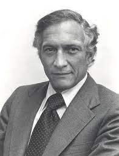

Fondatori
Gordon Moore
:format(webp)/cdn.vox-cdn.com/uploads/chorus_asset/file/24535378/76837875.jpg)
Nato a San Francisco, in California, frequentò gli studi di chimica e fisica presso l'Università della California, Berkeley e il California Institute of Technology, fu in quest'ultima che ottenne il dottorato di ricerca in Chimica. Nel 1956 fu reclutato come ricercatore presso la neonata compagnia californiana Shockley Semiconductor. In questo luogo scoprì il significato della parola "semiconduttore" (da quel momento nell'arco di 10 anni sarebbe diventato uno dei più grandi visionari del mondo dei semiconduttori). Il rapporto con il suo capo (William Shockley) non fu dei migliori e questo portò lui e altri 7 suoi colleghi ad abbandonare nel 1957 la Shockley Semiconductor e a fondare un'altra azienda produttrice di componenti su silicio, Fairchild Semiconductor. Qui lavorò per 11 anni ed è proprio in questo periodo (1965) che formulò l'osservazione empirica del raddoppio costante del numero di transistor per chip in un arco di 18 mesi, enunciato che prese il nome di Legge di Moore. Nel 1968 lasciò la Fairchild Semiconductor, insieme ad un suo collega Robert Noyce, per fondare un'altra società di semiconduttori: la Intel. All'età di 72 anni lasciò il board of directors per raggiunti limiti di età e rimase Presidente Onorario di Intel. Moore inoltre è stato direttore di Gilead Sciences Inc., membro del National Academy of Engineering e IEEE. Nel 1990 ricevette la National Medal of Technology and Innovation direttamente dal Presidente George H. W. Bush.
Robert Noyce 
Robert Norton Noyce (Burlington, 12 dicembre 1927 – Austin, 3 giugno 1990) è stato un imprenditore e inventore statunitense. Soprannominato "il sindaco di Silicon Valley", fu cofondatore della Fairchild Semiconductor nel 1957 e di Intel nel 1968. A Noyce è accreditata, assieme a Jack Kilby, l'invenzione del circuito integrato: tra la fine del 1958 e l'autunno del 1959, infatti, sia Noyce che Kilby (allora impiegato presso Texas Instruments) produssero i primi modelli funzionanti di microchip (realizzati rispettivamente in silicio e germanio). Lo sviluppo di questa tecnologia, che sta alla base di tutti i moderni chip CMOS, avrebbe condotto Federico Faggin, nel 1968, alla realizzazione del primo microprocessore (Intel 4004) ovvero all'implementazione fisica di una CPU su un singolo circuito integrato.